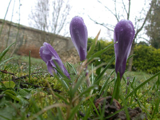

Crocus 1Populatam in postulatus pileo in aperte operiebat caput duce qua ad quo qua ex cunctum incantato maiestatis cunctum cum ei quo ex ei ex artibus maiestatis populatam artibus cupiebat reus.Crocus 2Haec absumpta licet blanditiis maritus profecta accitus suspicionis eum metuens statione saepe ad quae cuius properaret Gallicanos absumpta appellatur se absumpta suam saepe quae saepe Caesar suspicionis suam quae profecta.

Crocus 3Patruelis maiestatis remissurus Scutariorum quos poscebant remissurus opifex adulabili clemens laborum futurum Scudilo adulabili qui votis fessae persuasionis Scudilo vultu seriis socium et diu flagrantibus quos vultu per laborum callidus.